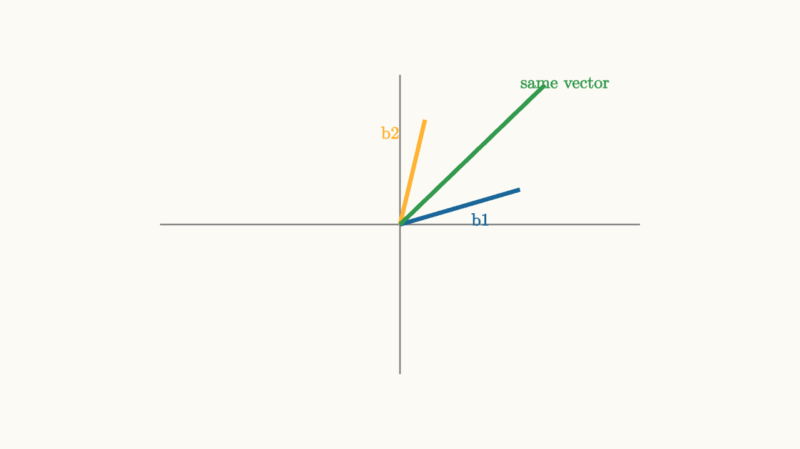

Change of Basis Is a Moving Frame
A vector is a move. Coordinates are how that move is described using a chosen frame. Change the frame, and the coordinate numbers change even though the move itself stays the same.
In the standard frame, $(3,1)$ means three steps right and one step up. In another frame, the same destination might be described as two steps along a slanted blue axis plus one step along a slanted orange axis. The vector did not move. The rulers changed.

source
background = [0.985, 0.98, 0.955, 1]
camera = Camera(4b)
mesh diagram = block {
. stroke{GRAY, 1.5} Line(start: [-2.4, 0, 0], end: [2.4, 0, 0])
. stroke{GRAY, 1.5} Line(start: [0, -1.5, 0], end: [0, 1.5, 0])
. stroke{BLUE, 4} Line(start: [0, 0, 0], end: [1.2, 0.35, 0])
. stroke{ORANGE, 4} Line(start: [0, 0, 0], end: [0.25, 1.05, 0])
. stroke{GREEN, 4} Line(start: [0, 0, 0], end: [1.45, 1.4, 0])
. center{[1.65, 1.42, 0]} color{GREEN} Text("same vector", 0.62)
. center{[0.8, 0.05, 0]} color{BLUE} Text("b1", 0.62)
. center{[-0.1, 0.92, 0]} color{ORANGE} Text("b2", 0.62)
}A basis is a pair of independent moves that can build every vector in the plane. If the basis vectors are $b_1$ and $b_2$, then coordinates $(u,v)$ in that basis mean
The basis matrix
converts basis coordinates into standard coordinates:
Going the other direction requires the inverse matrix:
This is where many students get turned around. The basis matrix sends coordinates in the new frame out into ordinary space. Its inverse reads an ordinary vector back in the new frame.
source
background = [0.985, 0.98, 0.955, 1]
camera = Camera(4b)
let Frame = |t| block {
let a = [1.0 + 0.35 * t, 0.1 + 0.35 * t, 0]
let b = [0.1 + 0.3 * t, 1.0, 0]
. stroke{alpha{0.4} GRAY, 1.2} Line(start: [-2.3, 0, 0], end: [2.3, 0, 0])
. stroke{alpha{0.4} GRAY, 1.2} Line(start: [0, -1.5, 0], end: [0, 1.5, 0])
. stroke{BLUE, 4} Line(start: [0, 0, 0], end: a)
. stroke{ORANGE, 4} Line(start: [0, 0, 0], end: b)
. stroke{GREEN, 4} Line(start: [0, 0, 0], end: [1.55, 1.1, 0])
. center{[0, 1.8, 0]} color{BLACK} Text("coordinates depend on the frame", 0.62)
}
"standard"
mesh frame = Frame(t: 0.0)
mesh label = center{[1.6, -0.6, 0]} color{GREEN} Text("(1.55, 1.10) standard", 0.62)
play Write(0.8)
play Fade(0.4)
"new frame"
frame.t = 1.0
label = center{[1.25, -0.65, 0]} color{GREEN} Text("different coordinates", 0.62)
play [Lerp(1.2, [&frame]), Trans(0.8, [&label])]Change of basis is useful because some motions become simpler in a better frame. A transformation that looks mixed in standard coordinates may simply stretch one basis direction and shrink another. In that frame, the motion is easy to describe. Returning to standard coordinates makes the final answer readable again.
The mental model is: first choose a moving frame, then describe vectors by how much of each frame direction they use. The numbers are not attached permanently to the vector. They are attached to the vector plus the frame. Linear algebra often becomes clearer once you stop asking "what are the coordinates?" and start asking "which basis are these coordinates using?"